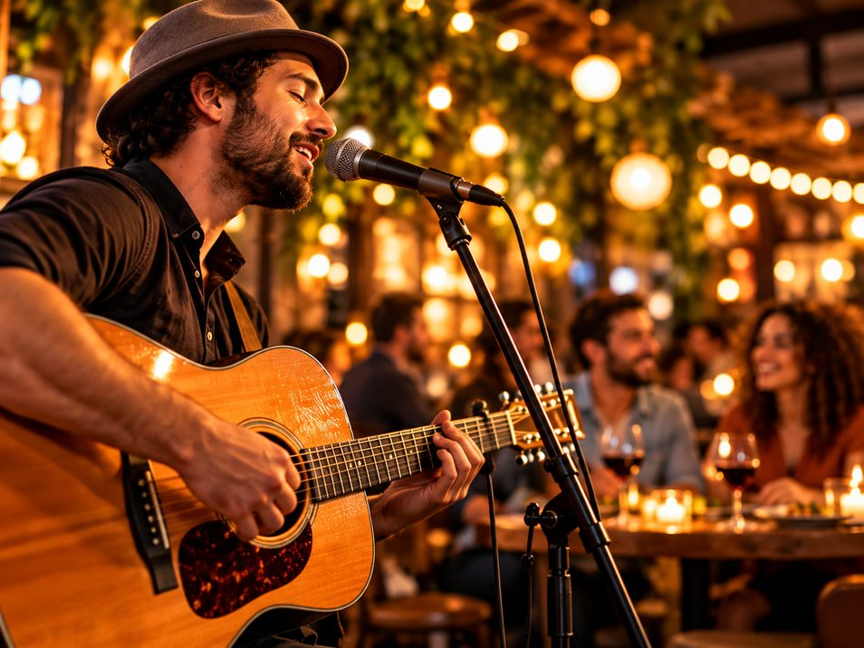
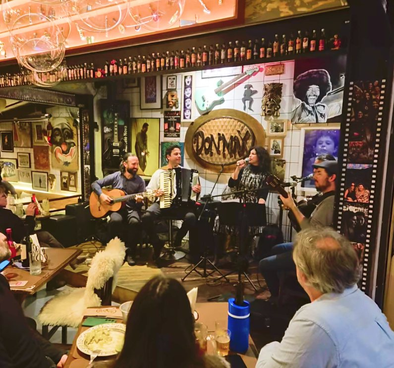
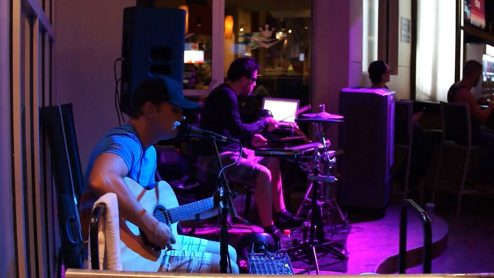
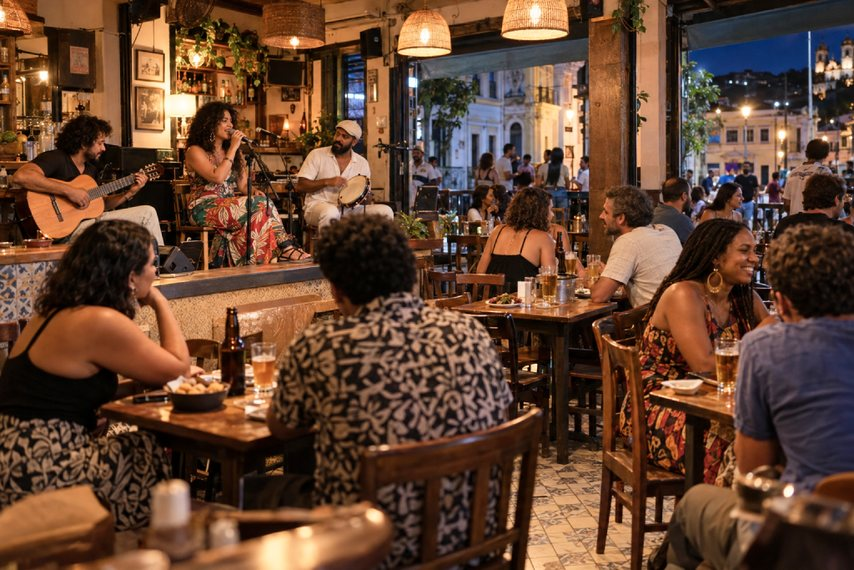

#75 out. 26
Por: Paula Melech
Música AO VIVO
vale a pena?
A música pode transformar a experiência do cliente e criar novas oportunidades de consumo. Mas, antes de aumentar o volume, é preciso saber se a conta fecha.
O jantar terminou, mas ninguém pede a conta. A música começou, a conversa continua e surgem novos pedidos. Para bares e restaurantes, cenas assim mostram como a música ao vivo pode ir além do entretenimento.
Quando combina com o público e com a proposta da casa, a atração pode prolongar a permanência, estimular novos pedidos e dar ao cliente mais um motivo para voltar. Mas casa cheia não é sinônimo de lucro: é preciso acompanhar consumo, faturamento e custos.
Segundo Luis Fernando Menuci, presidente da Associação Brasileira de Bares e Restaurantes no Paraná (Abrasel-PR), a estratégia pode melhorar a experiência do consumidor.
“Quando a atração artística conversa diretamente com o perfil dos clientes, a experiência do consumidor é elevada: as pessoas tendem a prolongar a permanência no local, desfrutam melhor do ambiente e, naturalmente, ampliam o consumo.”

Quando o palco
ajuda a vender
Paulo Zanatta, sócio-proprietário do restaurante Don Max, em Curitiba (PR), percebe reflexos da música nos pedidos.
“Com a música ao vivo, conseguimos atrair clientes em momentos nos quais normalmente não teríamos tanto movimento. Em uma noite de jazz, por exemplo, vendemos mais vinhos e pratos. Já em uma noite de rock, aumentam os pedidos de cervejas e petiscos”, conta.
Paulo Zanatta,
proprietário do Don Max
O efeito da música ao vivo
Um levantamento da Leger, The Research Intelligence Group, em conjunto com a Broadcast Music, Inc. (BMI), ouviu mais de 2,2 mil pessoas e identificou efeitos sobre a experiência e o consumo.
Entre consumidores de 18 a 49 anos:

- 85% aproveitam mais
a experiência - 83% têm maior probabilidade de retornar
- 80% permanecem por
mais tempo - 70% gastam mais com
comidas e bebidas
Os dados mostram que a música pode ir além da ambientação. Quando alinhada ao público, pode favorecer a permanência, estimular novos pedidos e ajudar a movimentar horários mais fracos.
Hoje, o cliente quer mais do que um prato
Comida gostosa continua sendo essencial, mas atendimento, ambiente e convivência também ficam na memória.
“Hoje, quando uma pessoa sai para um bar ou restaurante, ela não está procurando apenas uma boa comida ou bebida. Ela quer ser bem atendida, encontrar um ambiente agradável e viver uma experiência diferente”, afirma Menuci, presidente da Abrasel-PR.
Isso não significa que todo restaurante precise montar um palco. A questão é entender se a música melhora a experiência que o estabelecimento pretende oferecer.
Qual experiência você quer criar?
-
Happy hour Descontração e encontro
Samba, pagode, MPB
ou pop acústico -
Jantar Conforto e permanência
Jazz, bossa nova ou apresentações intimistas
-
Público jovem Energia e personalidade
Pop, rock, indie e repertório contemporâneo autoral
-
Entretenimento A programação é a atração!
Artistas recorrentes e noites temáticas
Ficar mais tempo significa gastar mais?
Não necessariamente. Permanecer mais tempo cria oportunidades de consumo, mas a música não aumenta vendas sozinha. O resultado depende da combinação entre repertório, cardápio, atendimento e perfil dos clientes.
Se o atendimento demora ou a experiência sonora incomoda, o tempo adicional dificilmente vira faturamento.

Mas quanto custa?
O cachê é apenas parte da conta.
Considere:
- Artista Cachê, transporte e alimentação.
- Estrutura Som, iluminação e adaptações.
- Direitos autorais Pagamento ao Ecad, quando aplicável.
- Operação Divulgação, energia e limpeza.
- Regras locais Alvarás, isolamento acústico etc.
O couvert artístico pode compensar parte das despesas, desde que informado com clareza, mas não deve ser considerada como a fonte de retorno para fechar essa conta.
Salão cheio rende boas fotos, mas não mostra sozinho se a estratégia foi rentável. É preciso acompanhar número de clientes, tíquete médio, consumo, faturamento, custos e recorrência.
Calcule, planilhe e compare o resultado com um outro momento equivalente, mas sem música.
“No final, gastronomia é também convivência, lazer, hospitalidade e bons momentos”, resume Menuci.
A música faz sentido quando contribui para essa experiência e, ao mesmo tempo, entrega resultados que justifiquem o investimento.